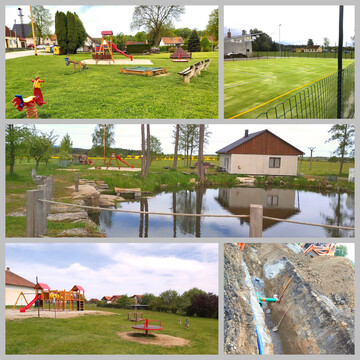

Místní části

Rozvoj místních částí je stejně důležitý jako rozvoj města samého. K městu patří 15 místních částí (počítáno s Rejty a Svatou Trojicí) a v součtu zde žije téměř 30% našich obyvatel.
Nejvíce je potřeba řešit vodovody a kanalizace tam, kde ještě nejsou zavedeny. Jejich vybudování je finančně mnohem náročnější než nové přípojky v samotném městě. Také efektivita nových sítí je nízká. Je nutné budovat velmi dlouhé a tím i finančně náročné vedení. V poměru k této finanční náročnosti se pak připojí velmi málo nemovitostí. Proto jsou tyto stavby znevýhodněny i v získávání dotací. Přesto je potřeba tuto otázku řešit. Uvědomujeme si, že lidé v místních částech si tyto služby zaslouží.
Dále je důležité se soustředit na stav místních komunikací. Významnou pomocí jsou komplexní pozemkové úpravy, v rámci kterých je možné získat 100% dotaci na vybudování nových komunikací. Mohou proběhnout ale pouze tam, kde se domluví většina vlastníků pozemků na zahájení úprav.
Velký posun přinesla práce osadních výborů a místních spolků. Díky jejich aktivitě se významně zvýšil zájem obyvatel o dění v jejich osadě a daleko lépe funguje předávání informací o tom, co je kde potřeba.
Podle statistik se ve většině našich místních částí zvyšuje počet obyvatel. U nás tedy neplatí, že lidé z venkova odcházejí.
Podařilo se
-
díky získané dotaci realizovat vodovod a kanalizaci na Svatou Trojici.
-
vytvářet nebo vylepšovat místa pro setkávání.
-
zavádět veřejné osvětlení.
-
zřizovat dětská hřiště, popř. doplňovat herní prvky.
-
rozšířit možnosti třídění odpadu.
Chceme
-
využít získané dotace a vybudovat kanalizaci na Rejtech.
-
pokračovat ve zkvalitňování života podle požadavků osadních výborů.
-
nadále spolupracovat s osadními výbory a místními spolky.
-
pokračovat ve finanční podpoře společenských akcí.
-
na Rankově požádat o novou komunikaci a rekonstrukci mostu v rámci komplexní pozemkové reformy.
-
v Pěčíně dokončit komplexní pozemkovou reformu.
-
oslovovat významné vlastníky půdy v dalších místních částech k zahájení komplexní pozemkové reformy.